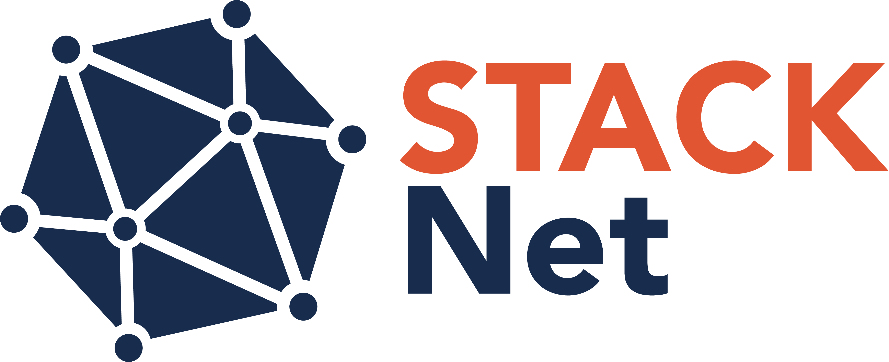

STACK Net – Connecting the German-speaking STACK community
Start date: 01/04/2023
End date: 31/03/2026
Duration: 36 months
Official project website: https://www.oth-aw.de/stack-net
STACK Net is an initiative aimed at enhancing collaboration and communication in the educational sector, particularly among the German-speaking STACK community. The project brings together sixteen participants from six different higher education institutions in Germany. This diverse group includes vice-presidents, an associate dean, a teaching mentor, professors, directors, a lecturer, and educational media developers, underscoring the project's broad approach and commitment to advancing educational practices across various academic fields.
The STACK Net initiative is led by Prof. Dr. paed. Dipl.-Math. Mike Altieri and aims to foster innovative teaching practices. The main objectives of STACK Net include - the regular issuance of a STACK newsletter, - the development and implementation of a community-oriented website designed for networking, - and active participation in various events where STACK is relevant.
These initiatives are designed to promote greater engagement and dissemination of knowledge within the STACK community.
Since its inception, STACK Net has achieved noteworthy milestones such as the consistent distribution of newsletters, with a growing subscriber base within the first year standing at 124 individuals (Figure 1). Additionally, the networking website is set to be completed in 2024 and will serve as a central hub for community interactions.
Figure 1: STACK Net subscriber base in Germany
Moving forward, the next steps for STACK-Net involve rolling out further newsletter articles and finalizing the implementation of the community website. This website, known as "STACK Connect", serves as a hub for the German-speaking STACK community. It aims to foster collaboration, facilitate knowledge sharing, and provide support for both seasoned members and newcomers alike. The platform features discussion forums tailored to address common challenges within the community and specific interest groups for more focused conversations. Additionally, it encourages active participation, knowledge exchange, and engagement with STACK newsletters.
Future milestones include internal quality enhancement through the creation and deployment of screencasts, as well as the automation of the STACK contact network establishment on the homepage, which will further streamline operations. Additionally, routine distribution of the STACK newsletter, including regular data collection from the global STACK community, will be operational.
The project STACK Net is funded by the German Foundation for Innovation in Higher Education. For more information visit https://stack-connect.oth-aw.de or contact us via email: Prof. Mike Altieri.
